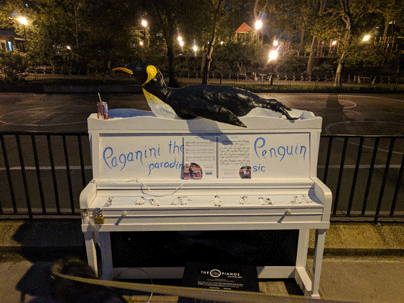

Czech center

This is a link to my annotated Markdown page
that transcribes the first few paragraphs of the article and includes a link to an image of the article as it appeared in the New York Times.